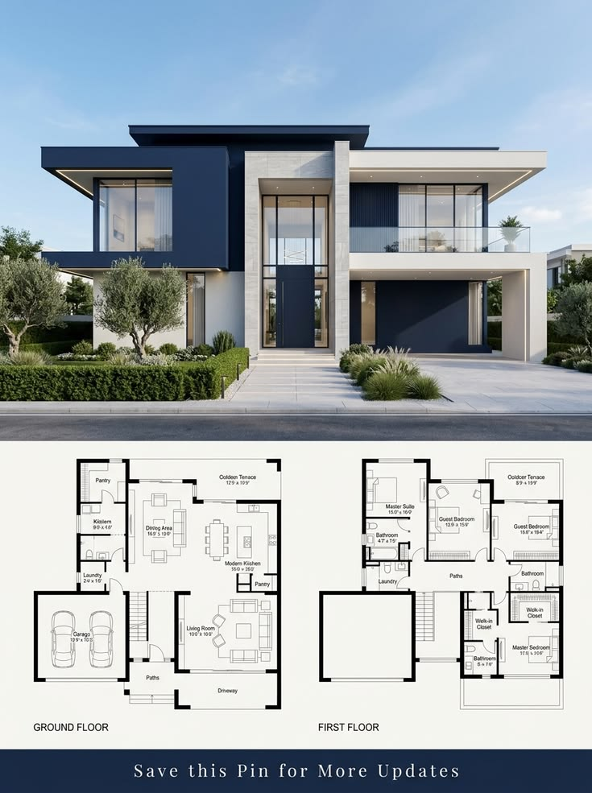
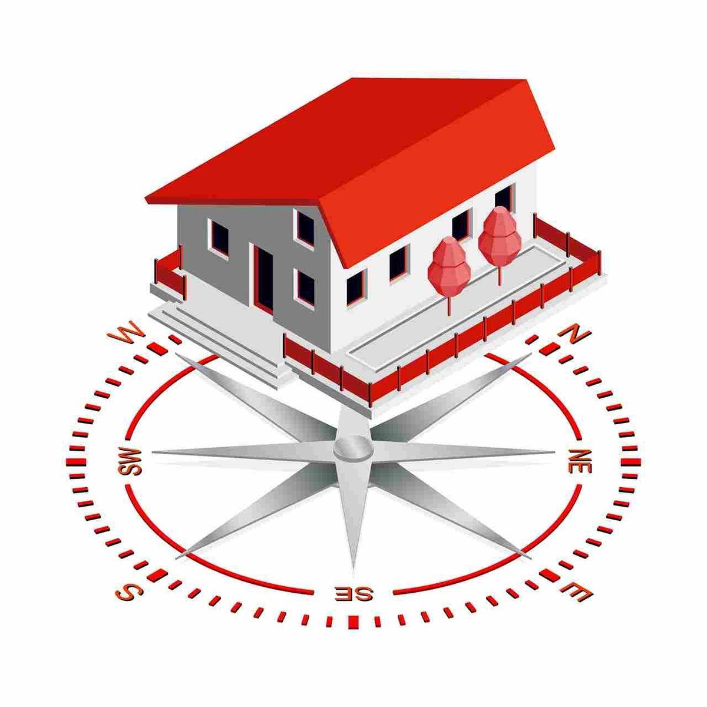
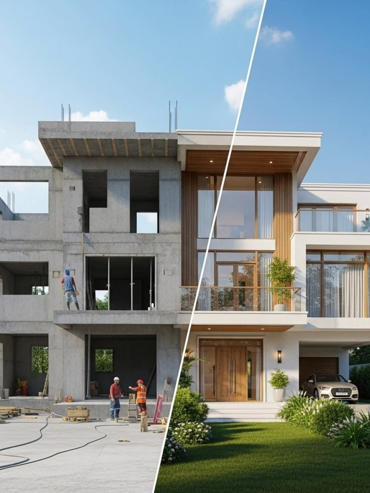
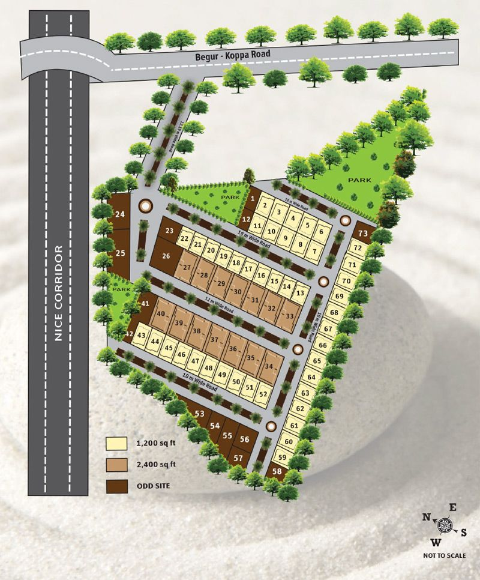
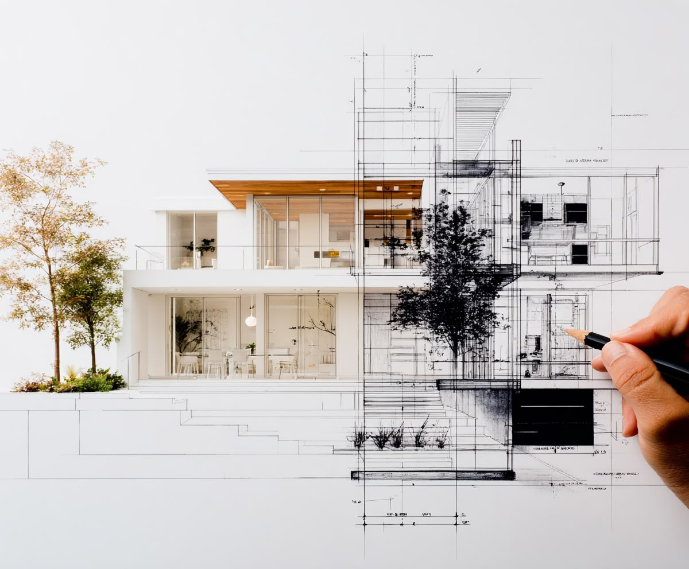

Complete Building
Solutions.Fine Line Projects in Ballari
From the first sketch to the final finish, Fine Line Projects delivers architectural, engineering, interior design and construction services under one roof.

Building Plans & Designs
Conceptual, functional, and innovative architectural planning tailored to your lifestyle, site, and budget. We focus on thoughtful space planning that maximizes natural light, ventilation, and everyday usability.
- Custom residential and commercial layouts
- 3D conceptual design & walkthroughs
- Site-responsive architectural planning
Site Visits & Supervision
Regular site inspections and technical supervision to ensure your construction is executed correctly, safely, and to the highest quality standards. We act as your on-ground technical eyes.
- Scheduled & surprise site inspections
- Quality control during execution
- Contractor & vendor coordination
Project Management Consultancy
End-to-end project coordination covering budgeting, scheduling, material sourcing, and progress monitoring — so you have a single point of accountability for the entire build.
- Transparent budgeting & cost tracking
- Milestone-based scheduling
- Professional coordination of all stakeholders

Vastu Consultancy
Vastu-aligned planning that harmonizes traditional principles with modern design. We integrate Vastu considerations into the building layout where clients request it.
- Vastu-aligned layout planning
- Room orientation & entrance guidance
- Balanced modern + traditional approach

Turnkey Construction Projects
One contract, one team, complete delivery. From architectural design and approvals to construction and handover, we manage the entire lifecycle of your building project.
- Single point of responsibility
- Fixed timelines and milestone tracking
- Complete handover ready to move in

Layout Planning & Development
Strategic land layout planning for residential and commercial developments, including plot division, access roads, and infrastructure planning.
- Site feasibility studies
- Plot layout & infrastructure design
- Regulatory compliance guidance

Architectural Services
Complete architectural concept development, planning, drawing documentation, and design coordination — from concept to construction-ready blueprints.
- Architectural concept & design development
- Detailed construction drawings
- Coordination with structural & MEP consultants

General Contracting
Professional construction execution and contractor coordination. We manage material, labor, and on-site quality control to ensure your project is built as designed.
- Experienced site execution team
- Material quality assurance
- Timeline-focused construction delivery
Frequently asked questions
What is the home construction cost per square foot in Ballari?
Listed home construction packages are ₹2,200, ₹2,400 and ₹2,600 per sq. ft. Final pricing depends on the project scope and specifications.
What building design services do you offer?
Services include building plans and designs, architectural services, layout planning and development, and interior design.
Do you offer Vastu consultancy?
Yes. Vastu considerations can be included in building layout planning when requested by the client.
Do you provide turnkey construction?
Yes. Turnkey construction projects are among the services offered by Fine Line Projects.
Can you supervise a construction project?
Yes. Site visits and supervision, as well as project management consultancy, are listed services.
How do I contact Fine Line Projects in Ballari?
Call +91 94484 81494, email finelineanas@gmail.com, or send an enquiry through the contact page.
Ready to Begin Your Project?
Reach out for a free consultation with our consulting civil engineer.
Get a Free Consultation